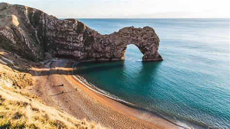
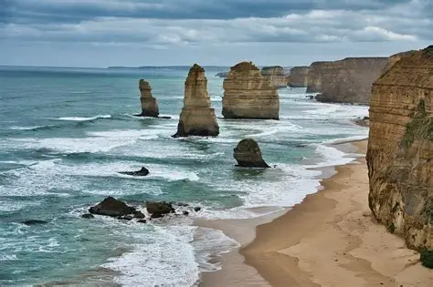
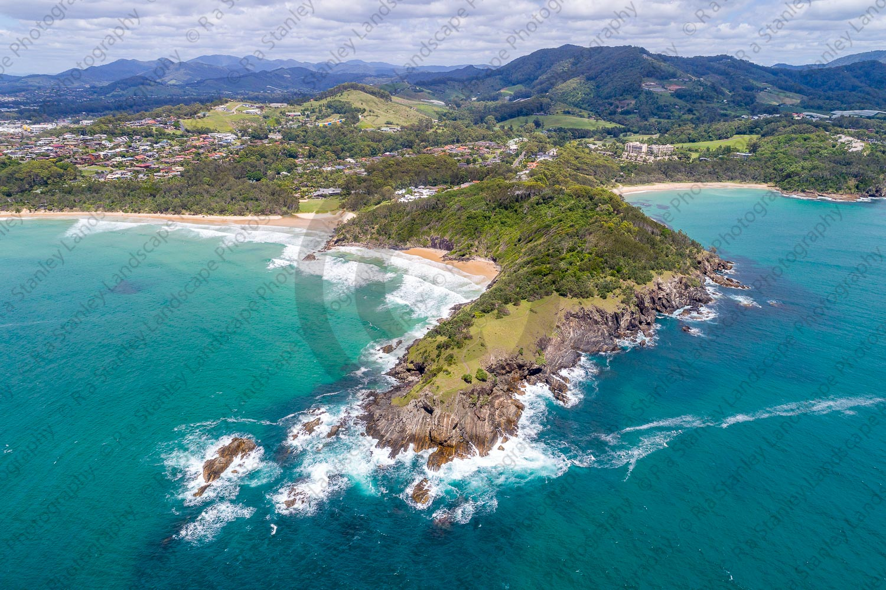
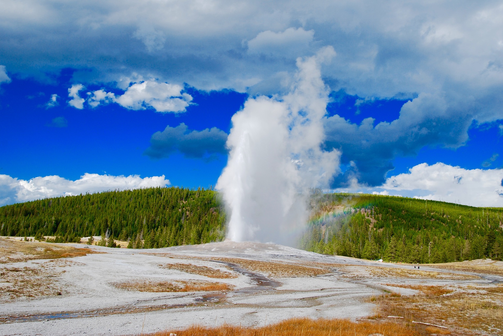
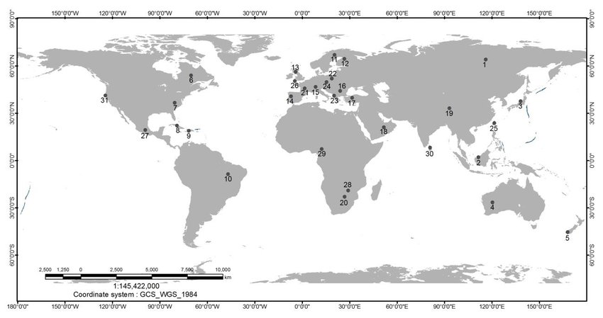

TerraLog
The geography of the coasts
Our planet Earth flaunts its impressive 200, 000 kilometers of shoreline. From white sandy beaches to harsh rock cliff side sea faces our coasts don’t lack verity, but as varied as the coasts are so are their geographies. Let’s take a look at the magnificent geographic features carved by the water that covers 70% of our planet.
Before we dive into the different features, we must understand that there are primarily two types of coastlines, concordant and discordant. The main difference between the two of them is the way the hard and soft rock are arranged. In a concordant coastline the alternating layers of hard and soft rock are placed parallelly to the coastline. However, in a discordant coastline the layers are perpendicular to the coastline.
Formation of a Head land
Headlands usually form on discordant coastlines. Headlands are formed when the soft rock besides them is weathered and eroded by the sea. This leaves the hard rock protruding into the sea. The hard rock is known as the head land
Formation of sea caves and arches
After the formation of a headland, over time the constant crashing of waves onto its sides leads to small cave like openings in the headland these are known as sea caves. Over a few hundred to thousand years these sea caves erode so much that they form a hollow in the headland. This is then called an arch.
Stacks and stumps
If the top of the headland starts to erode near an arch a tall pillar of rock gets detached from the headland this is known as a stack. A stum is formed when a stack starts to weather, it grows shorter in height. The decrease in height over a period of time forms a stum.
In conclusion our earths breathtaking coastlines are the artwork of one of the important forces shaping out planet erosion and weathering. On one side where lava cools onto the surface creating new land, erosion and weathering break it down to form the fertile soils that we find in forest and which we use for agriculture. It just goes to show how often we underappreciate the perfect symphony of process that define our very existence.
The Geology of India - The Past, Present and Future
 Our journey starts 130 million years ago when the Indian plate broke off from the mainland of Gondwana, one of the two main land forms at that time. The Indian subcontinent drifted north across the Tethys Sea at a rate of 5cm/year. It is important to know that the subcontinent looked much different than what it would look in the next 42 million years, when a small piece of land, Madagascar would break out of the Indian mainland. For the next 22 million years, the plate would travel at the fastest rate ever recorded at a immense 20cm/year. There were many reasons why such rapid geological changes were seen. Firstly, when Madagascar broke away from the mainland India it created strong convection currents and secondly, the Indian plate was extremely light and thin becuse of which it was easy to move. It would take another 16 million years for the plate to collide with Eurasian plate. During this long expanse of time lasting over 80 million years India hosted many vivid life forms and ecosystems. It was also was the site for the formation of one of the greatest geological formations; the Himalayas and the Deccan plateau.
Our journey starts 130 million years ago when the Indian plate broke off from the mainland of Gondwana, one of the two main land forms at that time. The Indian subcontinent drifted north across the Tethys Sea at a rate of 5cm/year. It is important to know that the subcontinent looked much different than what it would look in the next 42 million years, when a small piece of land, Madagascar would break out of the Indian mainland. For the next 22 million years, the plate would travel at the fastest rate ever recorded at a immense 20cm/year. There were many reasons why such rapid geological changes were seen. Firstly, when Madagascar broke away from the mainland India it created strong convection currents and secondly, the Indian plate was extremely light and thin becuse of which it was easy to move. It would take another 16 million years for the plate to collide with Eurasian plate. During this long expanse of time lasting over 80 million years India hosted many vivid life forms and ecosystems. It was also was the site for the formation of one of the greatest geological formations; the Himalayas and the Deccan plateau.
Ecosystems and Animal life on the Indian subcontinent
Backtracking 130 million years (Early Cretaceous), India was a place of diverse biodiversity. With Dinosaurs like the Iguanodon, Spinosaurus, and Carcharodontosaurus roaming the land, and Pterosaurs commonly seen in the skies. Even the seas were filled with Ammonites, plesiosaurs. Life was thriving. The biodiversity would reach its peak nearly 88 million years ago during the Late Cretaceous era. Now bigger dinosaurs such as the Tyrannosaurus rex, Velociraptor, Triceratops, and even the Rajasaurus ruled the subcontinent. However, about 66 million years ago during the Palaeocene-Eocene era a mass extinction wiped out all non-avian dinosaurs, opening space for mammals to take a bigger role in the environment and habitat.
Formations of Land forms
The Indian subcontinent has many unique landforms shaped by geological forces over millions of years. One of the most important events was the movement of the Indian Plate, which broke away from Gondwana about 130 million years ago and moved northward. This movement caused massive changes. When India collided with the Eurasian Plate around 50 million years ago, it pushed up the land, forming the Himalayas. Another major landform is the Deccan Traps, located in central and western India. These were formed around 66 million years ago due to enormous volcanic eruptions. The lava from these eruptions spread out in layers, creating a wide, flat plateau made of dark volcanic rock called Basalt. These eruptions lasted for thousands of years and were so powerful that they may have contributed to the extinction of the dinosaurs. Today, the Deccan Plateau is rich in minerals and black soil, which is ideal for farming. Other landforms like the Thar Desert, the Western and Eastern Ghats, and the Indo-Gangetic plain were also shaped by the movement of tectonic plates, erosion, and sediment from rivers over time.
Conclusion
In conclusion, the landforms of the Indian subcontinent tell a fascinating story of movement, collision, and change over millions of years. From the towering Himalayas to the wide Deccan Plateau, each feature has been shaped by natural forces deep within the Earth. The journey of the Indian Plate, the powerful volcanic eruptions of the Deccan Traps, and the slow shaping of rivers and weather have all played a part. Understanding this history helps us see our landscape not just as a part of today’s world, but as a result of a long and exciting past.A Timeline of Life – The story of the Earth's biological history
The story of how, once a burning ball of fire, ended up hosting the most diverse life forms, is a truly fascinating and yes, we are talking about our Earth. It all started 4.6 billion years ago when a vast gas cloud made of hydrogen collapsed onto itself forming the Sun. The gravity of the sun caused dust and other matter to form clumps. Around 4.5 billion these grew bigger, one of them would end up becoming the Earth we know today. During this time period the surface of earth was molten lava and the atmosphere made from poisonous gases like Carbon monoxide, Sulphur dioxide, Nitrous oxide, etc. For the next 500 million years the planet would slowly cool down. Another big change would be the appearance of water on earth by icy comets. It would take another 200 million years for the first living cell to appear in the oceans.
The Great Oxidation Event (GOE)
Around 3.8 billion years ago, Earth experienced a major change known as the Great Oxygenation Event (GOE). Before this event, Earth’s atmosphere had very little oxygen, and most life consisted of simple, single-celled organisms living in oceans. Some of these early microbes, especially cyanobacteria, developed the ability to perform photosynthesis — a process that uses sunlight to convert water and carbon dioxide into glucose, releasing oxygen as a byproduct. As these cyanobacteria spread across Earth’s shallow seas, they began producing large amounts of oxygen over millions of years. At first, this oxygen reacted with iron and other materials in the oceans, forming rust-like deposits. But eventually, it started building up in the atmosphere. This change was toxic to many anaerobic (oxygen-intolerant) microbes, causing a massive die-off. However, it also opened the door for a new kind of life: organisms that could use oxygen for more efficient energy production. This shift laid the foundation for complex life.
From Single-Celled to Multicellular Life in the Sea
The earliest life on Earth was made up of single-celled organisms like bacteria and archaea, which lived alone or in loose colonies. Over time — especially after the GOE — some cells began to cooperate more closely, forming simple multicellular structures. These early multicellular organisms may have formed by cells sticking together after division, or by one cell engulfing another in a helpful relationship (like the origin of mitochondria and chloroplasts through endosymbiosis).
By around 1.6 billion years ago, we see evidence of simple multicellular organisms, and by 600 to 800 million years ago, more complex multicellular life like algae, sponges, and early animal forms began to evolve in the oceans. Life in the sea offered stability: water protected cells from UV radiation and temperature changes, and nutrients were readily available. Multicellularity allowed organisms to specialize their cells for different functions — like movement, feeding, or reproduction — making them more efficient and adaptable.
The Dinosaurs
The dinosaurs were probably one of the greatest species to roam this earth, at least in terms of the duration they spent on earth. Dinosaurs ruled the land and seas for over 165 million years over three eras: the Triassic, the Jurassic, and the Cretaceous. In comparison, humans have only roamed the earth for about 300,000 years.
This evolutionary step eventually led to the rise of marine animals, including jellyfish-like creatures, worms, and eventually the Cambrian Explosion (~540 million years ago), when many major animal groups rapidly appeared in Earth’s oceans.
Earth during the Triassic was dominated by a hot, dry climate and a single giant landmass called Pangaea. The first dinosaurs appeared — small, agile, bipedal reptiles like Eoraptor and Herrerasaurus. Other dominant creatures included large reptiles such as Postosuchus, which resembled crocodiles, and early marine reptiles like Ichthyosaurs and Nothosaurs. In the skies, the first pterosaurs took flight, while on land, the plant life was dominated by ferns and conifers.
During the Jurassic period, Earth became more humid when Pangaea began to split into smaller continents. This led to more diverse ecosystems. Dinosaurs grew larger and more dominant. Famous species from this era include Brachiosaurus, Allosaurus, and Stegosaurus. In the oceans, marine reptiles like Plesiosaurs and Ichthyosaurs thrived, and ammonites, shelled creatures related to modern squids, became more common. One of the most important evolutionary steps occurred during this time - the appearance of the first birds, such as Archaeopteryx, which evolved from feathered dinosaurs.
The Cretaceous period was the final chapter of the dinosaurs. Dinosaurs reached their peak in diversity and size during this period. Iconic species such as Tyrannosaurus rex, Triceratops, Ankylosaurus, and Velociraptor lived during this time. Feathered dinosaurs were common, and birds evolved into more agile and capable flyers. In the oceans, giant marine reptiles like Mosasaurus and Plesiosaurs hunted prey. Unfortunately, this period ended in a massive extinction event about 66 million years ago, likely caused by a giant asteroid impact combined with intense volcanic activity. This event wiped out nearly all dinosaurs (except birds), most marine reptiles, and many other forms of life, making way for mammals to rise and dominate in the following age.
The Rock Cycle
The rock cycle is a continuous natural process that explains how rocks on Earth are formed, broken down, and transformed over millions of years. Instead of staying in one form forever, rocks are constantly changing from one type to another due to powerful Earth processes. Heat from the Earth’s interior, pressure from depths of the earth, weathering, erosion, and the movement of tectonic plates. This cycle shows us the close connection between the three major types of rocks — igneous, sedimentary, and metamorphic.
Igneous Rocks
From your kitchen counter to the land you stand on Igneous rocks are one of the most abundant types of rocks. In fact, they have been used by humans since the Paleolithic (Old Stone Age). Some examples include Granite, Basalt and Obsidian. Igneous rocks form due to the rapid cooling of magma; this often forms crystals. There are two types of Igneous rocks these are intrusive and extrusive and the difference between them is the location of the molten rock - magma (inside Earth) or lava (on the surface).
Sedimentary Rocks
Sedimentary rocks are more common than you think. They are used by the chemical, civil, and petroleum industries. Examples include Sandstone, Limestone, Shale, and Coal. When erosion breaks down Igneous rocks it forms small sediments, rivers and glaciers transport and deposit these rocks, where these sediments are pressurized by the layers of the earth over thousands of years to finally take the form of Sedimentary rocks.
Metamorphic Rocks
When Igneous and Sedimentary rocks get buried deep within the earth, extreme pressure and heat cause minerals to rearrange into new structures. Furthermore, the rock becomes denser, harder, and may form layers (foliation). Examples of Metamorphic rocks include Marble, Slate, Graphite and Quartzite.
The rock cycle is a vital Earth process that demonstrates the continuous transformation of rocks through natural forces such as heat, pressure, weathering, and erosion. Igneous, sedimentary, and metamorphic rocks are all interconnected, showing that no rock remains in the same state forever. Each type of rock not only plays an important role in shaping Earth’s surface but also provides valuable resources for human use in construction, industry, and daily life. By studying the rock cycle, we gain a deeper understanding of how Earth is constantly changing and renewing itself over millions of years.
Yellowstone national park
Yellowstone is located in the states of Wyoming and Idaho and is considered the world’s first national park. The park has led to many scientific discoveries, such as the discovery of the Thermus aquaticus which was discovered in Yellowstone’s hot springs; this microbe thrives in very high temperatures. Coming to hot springs, Yellowstone is known worldwide for its geysers. Geysers are an opening in the earth’s surface that intermittently spouts jets of steam and hot water. A geyser is formed when groundwater near a shallow body of water heats up due to the close proximity to magma. One well Geyser by the name of Old Faithful is the only geyser that is extremely predictable and has been erupting every 75 mins since 2000.
 Yellowstone National Park is one of the most fascinating geological sites in the world. It lies over a huge volcanic hotspot, which has caused several massive eruptions in the past 2.1 million years. The latest eruption, about 640,000 years ago, formed the Yellowstone Caldera. After these eruptions, smaller lava flows slowly filled parts of the caldera. Over time, glaciers also covered the region, carving valleys and shaping the landscape we see today. Even now, Yellowstone remains geologically active, with its hot springs and geysers showing that molten rock still exists beneath the surface.
Yellowstone National Park is one of the most fascinating geological sites in the world. It lies over a huge volcanic hotspot, which has caused several massive eruptions in the past 2.1 million years. The latest eruption, about 640,000 years ago, formed the Yellowstone Caldera. After these eruptions, smaller lava flows slowly filled parts of the caldera. Over time, glaciers also covered the region, carving valleys and shaping the landscape we see today. Even now, Yellowstone remains geologically active, with its hot springs and geysers showing that molten rock still exists beneath the surface.
The park contains a wide variety of minerals formed from its intense volcanic and hydrothermal activity. Common minerals found there include silica (quartz and opal). Sulphur is another important mineral, giving off the park’s characteristic “rotten egg” smell. Calcite and travertine are found around Mammoth Hot Springs, where limestone has been dissolved and redeposited by hot water. Other minerals such as iron oxides, clay minerals, and gypsum are also present, giving colourful shades of red, yellow, and white to thermal areas. Small amounts of feldspar, mica, and pyrite are also found in ancient volcanic rocks.
Why Earth Moves: The Mystery of Plate Tectonics That Other Planets Lack
Earth is the only planet we know that constantly reshapes itself. Continents drift, oceans grow, mountains rise, and volcanoes erupt — all because our planet’s surface is broken into giant moving plates. But if plate tectonics is such a powerful, planet-defining process, why don’t we see it on Mars, Venus, or anywhere else in the Solar System? This question lies at the heart of understanding what makes Earth so unique.
The first major factor behind Earth’s active plates lies deep within the planet’s interior heat. If the mantle becomes two hot it will prevent the plates to for. While on the other hand, a mantle that is two cold will lead to the plates not being able to move due to the freezing of the crust. Fortunately, Earth has a ‘Goldilocks’ amount of heat, which means that even if there was a decrease in temperature by 25 degrees Celsius, the tectonic plates would cease to move. Earth’s heat comes from, leftover heat from formation, radioactive decay (Uranium, Thorium, Potassium) and the slow cooling of the core. This perfect amount of heat keeps the mantle in a state called plastic convection, where it slowly swirls like hot caramel.
Secondly, Earth’s mantle is thick enough to push plates, soft enough to allow movement, and stiff enough to break the crust into pieces. This balance is rare. Mars has a much smaller mantle, indicating that it cools quickly, restricting the movement of plates. Furthermore, Venus’s crust is very similar size to Earth but has an extremely hot surface (475°C). A lack of water makes its crust too strong and too dry, preventing breakup into plates. Which brings us to the third factor effecting plate movements. Presence of liquid water. Water makes rocks, weaker, easier to melt, and easier to fracture. Lastly, Earth Has a Two-Layer Crust: Oceanic and Continental. The oceanic crust thinner, denser, and is made from Basalt. This helps the plate to sinks easily, this is known as subduction. These differences are the reasons we have mountains, earthquakes, ocean trenches, and volcano chains. Most planets only have one type of crust.
Earth’s ability to host plate tectonics is the result of a rare balance between internal heat, water, crustal structure, and planetary size. Even small shifts in these conditions could weaken or stop plate movement entirely, as seen on Mars and Venus. By comparing Earth to its silent neighbours, we begin to see how delicate and extraordinary our planet’s geologic system truly is.
Rao Jodha Desert Rock Park - Jodhpur
 When you think of Jodhpur, the “Blue City” of Rajasthan, India, the first image that come to mind is the majestic Mehrangarh Fort. However, tucked just beside it lies a hidden gem that many people overlook – The Rao Jodha Desert Rock Park.
When you think of Jodhpur, the “Blue City” of Rajasthan, India, the first image that come to mind is the majestic Mehrangarh Fort. However, tucked just beside it lies a hidden gem that many people overlook – The Rao Jodha Desert Rock Park.
The park is not just another patch of land. It is the land that preserves the ecological history of Rajasthan. During my visit in 2018, I realized the park isn’t just about desert plants and scenic walks. It’s also a journey into the deep geological past, where the very rocks beneath your feet tell stories that go back hundreds of millions of years.
The park sits on some of the oldest rock formations in the world, belonging to the Malani Igneous Suite. These volcanic rocks are estimated to be around 745 million years old — long before dinosaurs, long before India even drifted into Asia.
I remember when we first walked in, we were greeted by a display of rocks. Each rock had tags that talked about the rock, which I found fascinating. As I walked along the trails, I noticed how different parts of the park looked. Some rugged and dark, some reddish and flaky. That’s when I learned that the park’s rock strata consist of igneous and metamorphic rocks:
 Welded Tuff
Welded Tuff- Dolomite
- Khiala Limestone
Welded tuff comes from volcanic ash so hot that when it fell back to the ground, the particles fused into solid rock. Compact and dense, it feels like the frozen breath of an eruption, a direct imprint of explosive volcanic activity.

Dolomite is a reminder that Rajasthan was once under shallow seas. Formed when calcium-rich waters mixed with magnesium, this pale gray rock carries the memory of tropical marine environments that existed long before the desert took over.

This light-coloured limestone is made of compacted shells and marine organisms, representing an ancient seabed. Smooth and elegant, it quietly tells the story of oceans that once covered this land millions of years ago.
One thing that stuck with me was how my dad and I lost our way while following the trail and the way the warm sunlight during the sunset made the Mahrangarh fort glow. I even got to collect few of these rock samples for myself. The park is a dream world for those interested in geology and understanding the beautiful history of our Earth. It was a truly wonderful experience.
The Geolgy of Assam
My recent trip to Assam was an unforgettable adventure filled with natural beauty, crystal-clear waters, ancient caves, and breathtaking landscapes. I visited some of the most fascinating places — Dawki River, Arwah Caves, the Natural Swimming Pool, the “Antelope Canyon of India,” and even went on the thrilling Bulls Trek. Each of these spots had its own charm and story written by time, water, and rock.
Dawki River was the first stop, famous for its unbelievably clear waters that make boats look like they’re floating in the air. The river flows between India and Bangladesh, and its transparency is due to the rocky riverbed and minimal pollution. Geologically, Dawki lies in the Shillong Plateau, made mostly of ancient Precambrian rocks that are over 500 million years old. Around the river, I saw lush green hills covered with pine and bamboo trees. Kingfishers and butterflies added bright colors to the scene, making it feel like a painting come to life.
Next came the Arwah Caves near Cherrapunji, known for their limestone formations and fossils. The caves were formed by the slow action of acidic rainwater dissolving limestone over thousands of years. Inside, I could see stalactites hanging like icicles and stalagmites rising from the ground. Some parts of the cave even had ancient marine fossils, proof that this region was once under the sea.
The Natural Swimming Pool, also in Cherrapunji, was another highlight. It’s formed naturally by a small stream flowing through rocky terrain. The rocks here are sandstone, shaped smooth by centuries of water erosion. The water was cool and fresh, perfect for a quick swim. Around the pool, I noticed wildflowers, butterflies, and tiny fish swimming near the edges — a calm and beautiful reminder of how simple nature can be.
Then I visited the Antelope Canyon of India, named after the famous canyon in the USA. This hidden wonder in Meghalaya is made of red and orange sandstone that has been carved by wind and rain over millions of years into narrow, wavy walls. The sunlight reflecting through the cracks created a magical glow inside. The area was dry compared to the forests, but still home to hardy shrubs and small birds that thrive in the rocky landscape.
Finally, I went on the Bulls Trek, an adventurous trail through the rolling hills and forests of Assam. The path was filled with tall grass, chirping crickets, and the distant calls of hornbills. The trek offered views of deep valleys and flowing rivers — a reminder of the region’s rich biodiversity and geological diversity.
Amethyst – Bhedaghat, Madhya Pradesh
Category: Mineral (variety of quartz)

Colour: Violet to deep purple
Where can it be found?
• Brazil – Especially in Minas Gerais and Rio Grande do Sul (one of the
largest producers).
• Uruguay – Famous for high-quality deep purple geodes.
• Zambia – Produces some of the most intensely coloured stones.
• South Korea & Japan – Smaller deposits but notable for clarity.
• Russia (Ural Mountains) – Historically important, producing royal-quality
gems.
• United States – Notable deposits in Arizona, North Carolina, and Georgia.
• Canada – Thunder Bay, Ontario, is known for “red hematite” inclusions.
• Madagascar, Mexico, India, Sri Lanka – Other known sources.
Chemical Composition
Formula: SiO₂ (Silicon dioxide) – the same as quartz.
Coloration cause: The purple colour is due to trace amounts of iron (Fe³⁺) impurities and exposure to natural radiation over millions of years.
Fun Facts
Ancient Greeks believed amethyst could prevent drunkenness (its name comes from the Greek amethystos, meaning “not intoxicated”).
Heat treatment can turn amethyst yellow-orange, producing Citrine.
Serpentine
Colour: Greenish mineral
Where can it be found?

Italy – especially in the Apennine Mountains; famous for the green serpentine used in architecture.
Canada – particularly in Quebec, British Columbia, and Newfoundland.
United States – especially in California, Vermont, and Maryland. (California even named serpentine its state rock.)
Greece – in regions with ultramafic rocks such as Thessaly and Euboea
Russia – in the Ural Mountains and Siberia.
India – especially in Orissa (Odisha) and Jharkhand.
Chemical composition
X3Si2O5(OH)4,with X = Mg2+, Fe2+, Ni2+, Mn2+, Zn2+
Fun Facts
The name “serpentine” actually comes from the Latin word 'serpens', meaning “snake,” because its green, scaly patterns look like a snake’s skin!
In ancient times, people believed serpentine could protect against snake bites and poison, so it was often carried as a charm
Gold
Category: Native mineral (elemental metal)
Colour: Metallic yellow to golden
Where can it be found?
Gold occurs worldwide, often in hydrothermal veins, placer deposits, and greenstone belts. Major producers include:

China – Currently the largest producer of mined gold.
Australia – Major deposits in Western Australia (Kalgoorlie, Super Pit).
Russia – Large reserves in Siberia and the Far East.
United States – Notable deposits in Nevada, Alaska, and Colorado.
South Africa – Historically significant; Witwatersrand Basin once produced 40% of all gold ever mined.
Canada – Major sites in Ontario, Quebec, and Nunavut.
Peru – Important Andean deposits.
Indonesia – Grasberg Mine is one of the world’s largest.
Brazil & Colombia – Known for placer gold and historic gold rushes.
Chemical Composition Formula: Au (pure elemental gold)
How does gold form?
Gold is usually created by hydrothermal processes, where hot, mineral-rich fluids move through fractures and deposit gold as they cool. It also occurs in:
- Placer deposits – Rivers concentrate heavy gold flakes and nuggets.
- Volcanic hydrothermal systems – Epithermal veins.
- Greenstone belts – Ancient metamorphosed volcanic arcs.
- Intrusive bodies – Quartz–gold veins.
Fun Facts
Gold is one of the few metals found in pure (native) form in nature.
Highly unreactive — it doesn’t rust, tarnish, or corrode, which is why it looks the same for thousands of years.
Gold is very dense — nearly twice as heavy as lead.
Meteorites brought some of Earth’s gold — a portion of Earth's accessible gold likely arrived from asteroid impacts billions of years ago.
Gold is extremely soft; a single gram can be beaten into a sheet 1 m² (gold leaf).
Electrum, a naturally occurring gold–silver alloy, was used in some of the world’s earliest coins.
Who am I?
I am a student studying in Cambridge AS Levels in India. I have a deep inclination to learn about the different secrets that the earth holds to be unraveled
To know about further updates of my website, follow my Instagram - terralog_siddhantr